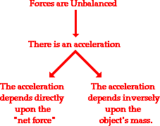

Newton's first law of motion predicts the behavior of objects for which all existing forces are balanced. The first law - sometimes referred to as the law of inertia - states that if the forces acting upon an object are balanced, then the acceleration of that object will be 0 m/s/s. Objects at equilibrium (the condition in which all forces balance) will not accelerate. According to Newton, an object will only accelerate if there is a net or unbalanced force acting upon it. The presence of an unbalanced force will accelerate an object - changing its speed, its direction, or both its speed and direction.
Newton's second law of motion pertains to the behavior of objects for which all existing forces are not balanced. The second law states that the acceleration of an object is dependent upon two variables - the net force acting upon the object and the mass of the object. The acceleration of an object depends directly upon the net force acting upon the object, and inversely upon the mass of the object. As the force acting upon an object is increased, the acceleration of the object is increased. As the mass of an object is increased, the acceleration of the object is decreased.

The Equation
Newton's second law of motion can be formally stated as follows:
The acceleration of an object as produced by a net force is directly proportional to the magnitude of the net force, in the same direction as the net force, and inversely proportional to the mass of the object.
This verbal statement can be expressed in equation form as follows:
Video Explaination
Newton's Second Law of Motion Explained, Examples, Word Problems, Physics - Mechanics